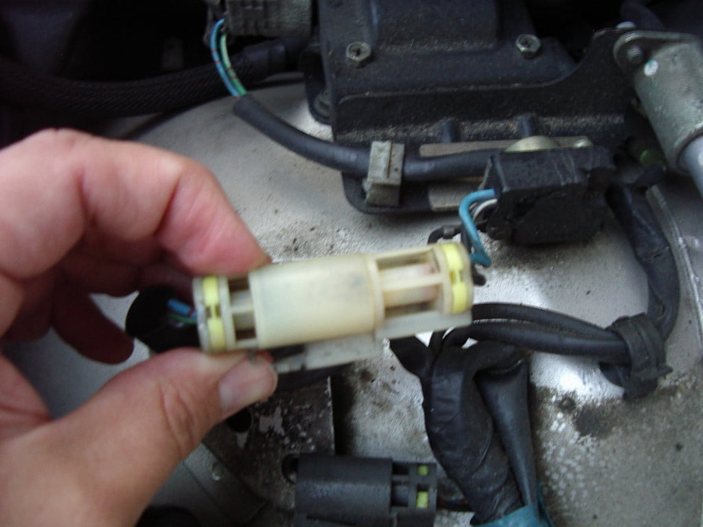
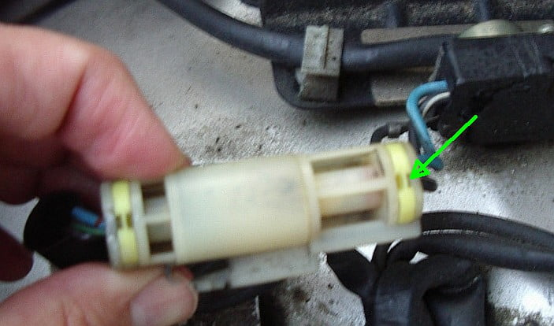
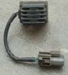

-
Re: Upgrade to PRW-2 Ign. Control Module (Power Transistor U
Pry up here:FrozenZ wrote: Okay, so, I have a really dumb question. Not worried about pin removal, I work on guitar amps all the time so I'm used to funny pins. However, I have to ask about this goddamn yellow retaining clip that backs up the pins. What is the trick to this thing? :lol:
I don't want to just bust it off, and after fucking with it for ten minutes I am considering soldering the wires too (see comment re: guitar amps; actually, I am considering mini-spade connectors so I can A/B the two units rather than relying on the placebo effect!) There must be something I am missing here. It looks like you are supposed to compress the tabs on the "other" side in relation to this pic, and pull it out "this" side, but I can't get it to go. Am I just an idiot?


using a small flat blade (jewelers) screwdriver or straight pin.
The yellow strain relief part will slide up, but is probably stuck due to grit build up.
If it breaks (or the thin white piece of the plug body breaks) It's OK.
The crimp terminal retaining mechanism of the plug body is enough to
keep the terminal in place.
84 AE/Shiro #683/Shiro #820/84 Turbo -
Re: Upgrade to PRW-2 Ign. Control Module (Power Transistor U
helpful stuff z-karma.
i have found that actually pushing the pin FORWARD from the back of the housing where the seals are will make prying up on the terminal tab easier. What I do is pinch the back of the wire with index and thumb of my left hand, and then push it in so my fingers are compressed against the housing, while holding it with my remaining 3 fingers on my left hand. this pushes the wire forward into the housing, i pry the tab upwards gently, and then squeeze the pinch a bit harder and it causes the wire to sliiiiiide out.
its a 3 second ordeal once you figure it out. -
Re: Upgrade to PRW-2 Ign. Control Module (Power Transistor U
Did the mod today. My brother snagged a pair. One is a prw-2 and the other is a prw-2a. Both tested fine. After I realized what I did wrong when distortionfile wanted me to try it years ago!! I swapped the 2 outside wires. Wrong! Checked the front page of this and realized my issue. Corrected, and tested both great! So im currently running the prw-2a!
My drive with it was nothing crazy, but it did seem to idle better.Damn dirty angels....these cars!
Current Daily Driver - 86 Turbo.
Under the cover - THE BANANA… that needs to be re-energized.
sigpic -
Re: Upgrade to PRW-2 Ign. Control Module (Power Transistor U
Put a PRW2-a in it. Big difference!
-
Re: Upgrade to PRW-2 Ign. Control Module (Power Transistor U
what u mean?Kingman wrote: Put a PRW2-a in it. Big difference! -
Re: Upgrade to PRW-2 Ign. Control Module (Power Transistor U
Ive got 4 prw-2 modules, pm me -
Re: Upgrade to PRW-2 Ign. Control Module (Power Transistor U
[quote]Careless wrote:Idles more stable and is a lot more responsive. If I was revving it in neutral with light throttle then stabbed it, it used to sputter a bit then catch up. Now it just zings right off.Originally posted by Kingman
Feels smoother when driving too and the lurching at low RPMS (idling down my driveway) lightened up a bit. -
Re: Upgrade to PRW-2 Ign. Control Module (Power Transistor U
[quote]Kingman wrote: [quote=Careless]You mean your car. PRW-2 and PRW-2a do the same exact thing....lolOriginally posted by Kingman- VG30DET (HE341) 86 300ZX - 1982 280ZX Turbo - Headered NA 1986 300ZX 2+2 - 2000 Xterra - -
Re: Upgrade to PRW-2 Ign. Control Module (Power Transistor U
…yes… -
Re: Upgrade to PRW-2 Ign. Control Module (Power Transistor U
Just confirming that, because I think careless thought you were saying PRW-2 didnt work for you, but 2a did.Kingman wrote: …yes…- VG30DET (HE341) 86 300ZX - 1982 280ZX Turbo - Headered NA 1986 300ZX 2+2 - 2000 Xterra - -
Re: Upgrade to PRW-2 Ign. Control Module (Power Transistor U
[quote]michaelp wrote:no mang… i was just wondering what the big difference was. what he experienced from swapping ignitors.Originally posted by Kingman -
Re: Upgrade to PRW-2 Ign. Control Module (Power Transistor U
I'm interested in doing this on my VG S12… but I don't understand WHAT it replaces. my car has something similar to this:

But wires go in to it from the harness, and out the other end of the transistor to the coil. I have a pathfinder plenum with this module on it, but it just plugs in to the harness, and a different plug from the harness goes to the coil.1987 Nissan 200sx SE V6 - daily
1995 Nissan Pathfinder SE - wheeler
-Dennis -
Re: Upgrade to PRW-2 Ign. Control Module (Power Transistor U
Iz good shit man. That's the TBI Pathfinder style PTU. I may stick a PRW2 on my Pathfinder even though I don't have it anymore just to see if the sliiiiiight surge goes away. -
Re: Upgrade to PRW-2 Ign. Control Module (Power Transistor U
The kouki z31 had the same style.Kingman wrote: Iz good shit man. That's the TBI Pathfinder style PTU. I may stick a PRW2 on my Pathfinder even though I don't have it anymore just to see if the sliiiiiight surge goes away.My Build Thread -
Re: Upgrade to PRW-2 Ign. Control Module (Power Transistor U
[quote]862sik wrote:No it doesnt…it looks the same, on the transistor, but the wiring setup is completely different…and its all wired in with the coil too. My TBI Pulsar has the same crap. The Kouki's is still wired exactly the same as the zenki z31.Originally posted by Kingman- VG30DET (HE341) 86 300ZX - 1982 280ZX Turbo - Headered NA 1986 300ZX 2+2 - 2000 Xterra -

Copyright © 2006–. All rights reserved. Privacy Policy